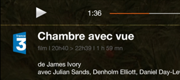

Android design - Colors and contrasts
Ensure that the colors used do not cause problems for the user.
Ensure sufficient contrast between foreground and background colors #
Target : everyone (sun on the screen, black and white printing...) and in particular the visually impaired, senior citizens and people with vision problems (color blindness, contrast vision, etc.)
When : from the design phase and during development.
Description :
The contrast level between the text (or a graphic component) and the background must be sufficiently high.
Insufficient contrast will be detrimental to users with visual difficulties or those in a very bright environment.
To be verified :
- Make sure the contrast between the background color and the text is :
- More than 4.5:1 for small texts (less than 18sp or 14sp for bold texts)
- More than 3:1 for large texts (more than or equals to 18sp or 14sp for bold texts)
- Ensure that the colors used in interface components, or information-bearing graphic elements, have a 3:1 contrast to the background. This includes buttons, radio buttons, checkboxes, selection lists, focus, progress bars, etc. The following are not affected: decorative texts, inactive elements, the logo and the brand name.
Tool :
The Colour Constrast Analyzer application allows you to quickly measure color contrast levels (free for Mac and Windows).
The AccessibilityScanner application allows you to directly test your applications on certain accessibility criteria, especially colors. Available from Android 6.
Invalid contrast example :
The text "film | 20h40 ..." does not have sufficient contrast. It will not be readable by all users.

WCAG reference:
Make sure that the dark mode is provided by the application #
Target: everyone (sun on the screen, black and white printing...) and in particular visually impaired people, seniors and people with vision problems (color blindness, contrast vision, etc.)
When: from the design phase and during development.
Description:
Although the dark mode is mostly used by aesthetic preference by users, for some visually impaired users (presence of floaters for example), the dark mode brings a real difference and it is therefore essential to take it into account in order to make it accessible.
To be checked:
- The application proposes to switch from light to dark mode in the application settings, and/or adapts to the phone setting (Settings/Screen/Dark mode).
Example of a screen in light mode:
Example of the same screen with the dark mode:

Ensure that color or sensory information is not the only source of information #
Target : everyone (sun on the screen, black and white printing...) and in particular the visually impaired, senior citizens and people with vision problems (color blindness, contrast vision, etc.)
When : from the design phase and during development.
Description :
Do not use color or sensory information (shape, size, sound, orientation, visual location...) as the only way to convey information, to indicate an action, to solicit a response or to distinguish an element. The information provided by a change of color or sensory information must be complemented by textual information (alternative) and/or semantic structuring.
To be verified :
- The loss of colors should not cause any difficulty in navigation or loss of information.
Exemple :

WCAG reference: